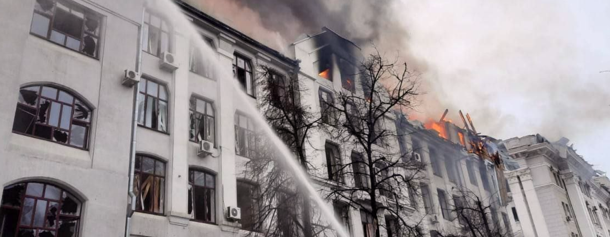

- гумунітарна допомога локальному населенню
- гумунітарна допомога військовим
- відновлення комунікаційних магістралей у часних будинків
- відновлення комунікаційних магістралей у часних будинків
- ландшафтне відновлювання
Фонд відновлення Харківської області та харкова


7 144 500 ₴
роздано
Про фонд
Благодійна організація «Благодійний Фонд «Добровільна допомога розвитку України» - це фонд цільової допомоги відбудови українського міста Харків. Наша мета фонду – допомогти повернути людям їх домівки.
Харків велике місто України, яке дуже постраждало від дій Роських загарбників. Місто знаходиться ближче всіх великих міст України до кордону з агресором. Більше всього війна змушує страждати мире незахищене населення: діти, люди похилого віку, багатодітні сім’ї тощо.
На сьогодні 30% житлових будівль Харкова зруйновна вщент,а в області майже 40%.
Фонд під час війни надає гуманітарну допомогу людям та військовим – це перший крок до відбудови Харкова.


Відбудова Дошкільних закладів та Шкіл
Мета проекту реконструкція після обстрілів корпусів навчальних закладів, адаптація та апгрейд до Європейських норм. Об'єм відбудови — 10 закладів із розрахунку 200 000 долл /1 об'єкт. Сумарно 2 млн долл.
Відбудова Харкова та Харківської області
Багатоповерхові будинки придатні для реконструкції. Об'єм відбудови — 100 будинків із розрахунку — від 85 000 долл /1 будинок. Сумарно 8,5 млн долл.

«Соціальний Одяг»
Хоч на зараз підприємства зачинені, є готовність налагодити 3 повноцінних виробництва на території м Харкова, із можливістю задіяти біля 1500 людей у 3 зміни. Пошив одягу для соціальних працівників: лікарів, військових тощо
допомоги тваринам
Мета проекту порятунок бездомних тварин. Об'єм забудови — 1 гуманітарний центр соціалізації та ветеринарної допомоги, адаптації до розселення по іншій території України та до країн Європи.

Протезування для ЗСУ та цивільних
Зробити центр протезної реабілітаційної допомоги Військовим та громадському населенню, котрі втратили частини тіла під час війни. Ми хочемо надавати якісну послугу у вигляді протезування різноманітних частин тіла.


статистика по харкову та області
- 3100 зруйнованих житлових будинків у Харкові
- 12000 зруйнованих часних будинків у Харківськії області
- 54 зруйнованих навчальних закладів
- 4.1 млн людей евакуйованих з Харкова та області
Гуманітарна допомога локальному населенню
Забезпечення фондом необхідного для населення : їжа, продовольчі товари, одяг, засоби індивідуальної гігієни, корма для тварин тощо.
Детальніше
Основне завдання гуманітарного напрямку допомоги Фонду - є покращення стану гуманітарного забезпечення населення Харкова та Харківської області.
Гуманітарну допомогу фонду можна отримати шляхом заповнення анкети « Гуманітарна потреба для населення». Ми надаємо гуманітарну допомогу за напрямками : їжа, продовольчі товари, одяг, корма для тварин, лікарські препарати, продукти для дітей та малюків.
Ми працюємо над розширенням допомоги від фонду, щоб можна було допомогти як найбільшому кількостю населення, але ми залежні від грошового та товарного постачання.
Дуже просимо підходити до допомоги з зрозумінням, ми намагаємось робити добрі справи за можливостями.
Гуманітарна допомога військовим

Підтримка наших захисників їжею, зручним одягом, облаштування спальних місць, інструментами, будівельними матеріалами тощо.
Детальніше
Військові України – це гордість нації. Ми вважаємо за необхідне підтримувати наших захисників, роблячи більш комфортнішими умови їхнього перебування на фронті.
Ми надаємо гуманітарну допомогу за напрямками : продукти харчування, продовольчі товари, одяг, амуніція, будівельні матеріали, інструменти ( лопати, ручні пили, сокири тощо), спальні місця тощо.
Гуманітарну допомогу фонду можна отримати шляхом заповнення анкети « Гуманітарна потреба для військових», або зателефонувати за номером телефону, щоб більш детальніше дізнатись про можливості допомоги фонду.
Відбудова та реставрація власних житлових будинків
Допомога людям у відбудові будинків, згорілих квартира від бомбардування тощо.
Детальніше
Відбудувати Харків та Харківську область – це основна мета нашої роботи фонду. Харків – це одне з надвеликих міст, котре знаходиться ближче від усіх міст України до кордонів агресора. Дуже постраждало саме місто, а Харківська область ще більше - там досі ідуть жорстокі бої за визволення України. Ми ретельно підходимо до дослідження руйнування міста та селищ, щоб максимально ефективно розробити план по відбудові та реставрації зруйнованих будівель.
«Харків Розквітне» це власне назва проекту фонду по відбудові Харкова та області.
-
Допомога фонду по проекту відбудування та реставрації полягає :
- - часткової або повної відбудови зруйнованої будівлі
- - полагодження кровель
- - реставрації фасадів будівель
- - розбір завалів
- - ремонтні роботи
- - відновлення комунікаційних магістралей : вода, каналізація, електроенергія та тепло.
Відбудову Харкова та Харківської області буде проводитись після закінчення війни.
Відновлення комунікаційних магістралей у власних будинках

Відновлення пошкоджених комунікаційних магістралей власних будинків : вода, каналізація, електроенергія та тепло.
Детальніше
Відбудувати Харків та Харківську область – це основна мета нашої роботи фонду. Харків – це одне з надвеликих міст, котре знаходиться ближче від усіх міст України до кордонів агресора. Дуже постраждало саме місто, а Харківська область ще більше - там досі ідуть жорстокі бої за визволення України. Ми ретельно підходимо до дослідження руйнування міста та селищ, щоб максимально ефективно розробити план по відбудові та реставрації зруйнованих будівель.
«Харків Розквітне» це власне назва проекту фонду по відбудові Харкова та області.
-
Допомога фонду по проекту відбудування та реставрації полягає :
- - часткової або повної відбудови зруйнованої будівлі
- - полагодження кровель
- - реставрації фасадів будівель
- - розбір завалів
- - ремонтні роботи
- - відновлення комунікаційних магістралей : вода, каналізація, електроенергія та тепло.
Відбудову Харкова та Харківської області буде проводитись після закінчення війни.